library(readr) # modernized functions to read rectangular data like csv
library(dplyr) # the most essential tidyverse packages
library(tidyr) # contains for example pivot tables
library(lubridate) # a tidyverse package for dates
library(ggplot2) # high level plotting with the grammar of graphicsAuswertung Wasserstand und Abfluss
Hydrologie und Wasserbau - Übung 5
Einführung
In dieser Übung werden Sie Wasserstand- und Abflussdaten von drei hydrologischen Stationen an Bächen in Bayern auswerten. Die Aufgaben, die Sie durchführen werden, umfassen:
- Importieren und Visualisieren der Daten
- Untersuchung der Schluesselkurve (Wasserstand-Abfluss-Beziehung)
- Überprüfung der Homogenität der Daten
- Darstellung einiger wichtiger Kurven, die die Daten charakterisieren
- Schätzung des Abflusses an einem Zwischenstandort für ein Bauprojekt
Die Aufgaben können alle durch Anpassung des im Beispiel gezeigten Codes oder durch Interpretation der Diagramme gelöst werden.
Das Ziel ist, Sie mit einigen statistischen Methoden vertraut zu machen, die häufig in der Hydrologie verwendet werden, den Umgang mit R zu üben und Ihnen einen Eindruck von der Arbeit mit echten hydrologischen Daten zu vermitteln.
Der Datensatz
Der Datensatz stammt von zwei Bächen, die etwa 30 km nördlich der Stadt Bayreuth in Bayern liegen. Die Daten wurden vom Geoportal des Gewässerkundlichen Dienstes Bayern des Bayerischen Landesamts für Umwelt heruntergeladen, das diese unter der CC-BY 4.0 Lizenz bereitstellt, welche die weitere Nutzung der Daten regelt. Dem Bayerischen Landesamt für Umwelt wird herzlich für das Sammeln und Bereitstellen der Daten gedankt.
Die Daten befinden sich in der Datei schorgast_wasserstand_abfluss.csv im Kursordner. Die Daten bestehen aus täglichen Messungen des Wasserstands (W) in cm über dem Pegelnullpunkt und des Abflusses (Q) in \(\mathrm{m^3 s^{-1}}\) von drei Pegelstationen:
- am Bach Schorgast in Wirsberg (Station 1)
- am Bach Untere-Steinach in Untersteinach (Station 2)
- am Bach Schorgast in Untersteinach unterhalb der Mündung des Untere-Steinach-Bachs (Station 3).
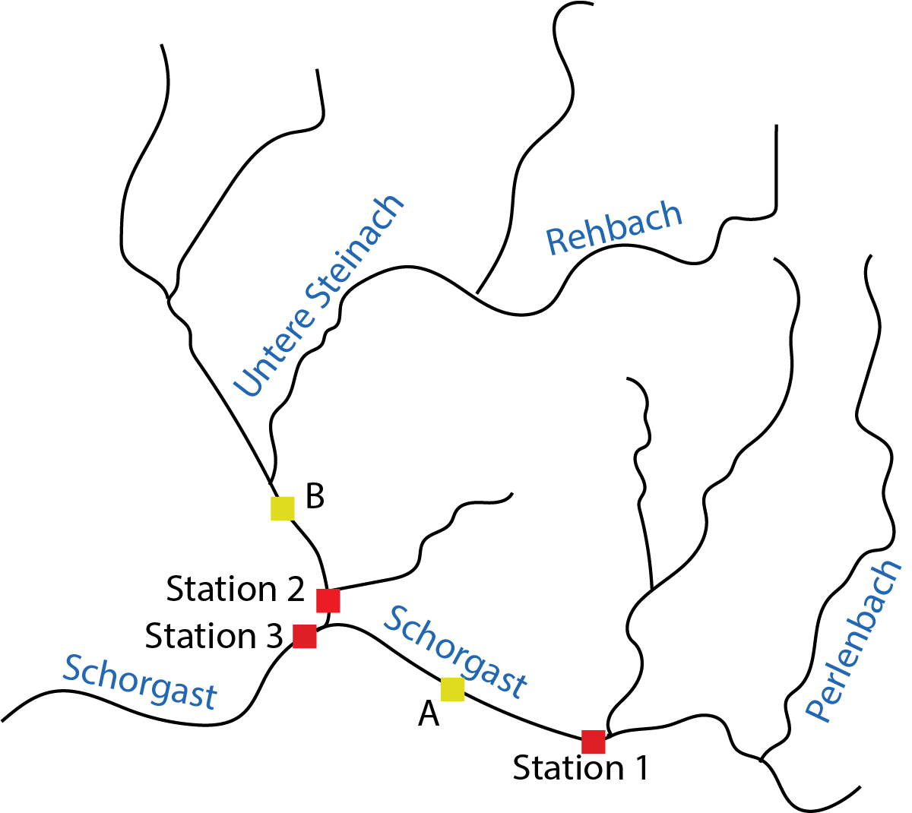
Die Überschriften W1-W3 und Q1-Q3 beziehen sich auf den Wasserstand und den Abfluss an den Stationen 1-3 entsprechend. Die ursprünglichen Daten wurden leicht modifiziert, indem sie auf denselben Zeitraum gekürzt wurden, und fehlende Abflussmessungen (Jan - Okt 1982) an Station 2 wurden basierend auf den Daten der beiden anderen Stationen geschätzt.
Die Daten sind in dieser Form unter https:// oder im Kursordner verfügbar. Zusätzliche Informationen zu den Daten sind in der Datei readme-steinach-schorgast.txt im Kursordner enthalten.
Pakete
Laden Sie zuerst die notwendigen Pakete für Ihre neue R-Session.
Importieren und Visualisieren der Daten
Bevor Daten in R importiert werden, ist es hilfreich, das aktuelle Arbeitsverzeichnis mit getwd() zu überprüfen und die Datei in einem Texteditor zu öffnen, um die Struktur der Daten zu prüfen. Beispielsweise: Welche Spalten gibt es? Wie sind sie formatiert (z. B. Datumsangaben, Dezimalzahlen, Text)? Wie sind die Spalten getrennt? Gibt es zusätzliche Zeilen oberhalb der Daten? Enthalten die Überschriften Sonderzeichen, die in R Probleme verursachen könnten? Es kann einfacher sein, solche Probleme manuell zu beheben, bevor die Datei importiert wird.
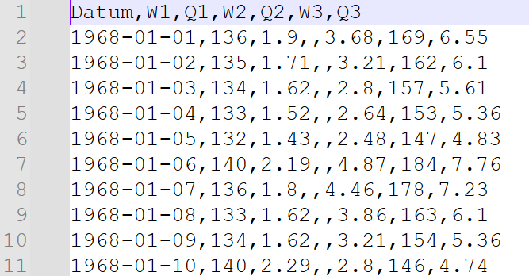
In diesem Fall haben wir eine Datei mit einer Kopfzeile, die erste Spalte enthält ein Datum im Format YYYY-MM-DD, und die Spalten sind durch Kommas getrennt. Auf meinem Computer befindet sich die Datei eine Ebene höher ../ vom aktuellen Arbeitsverzeichnis aus und von dort im Unterverzeichnis Daten/. Wir verwenden read_csv() aus dem readr-Paket und weisen (<-) die Daten der Variable schorgast zu.
schorgast <- read_csv("../data/schorgast_wasserstand_abfluss.csv")Alternativ können Sie die Daten manuell über File -> Import dataset -> from text (readr) importieren
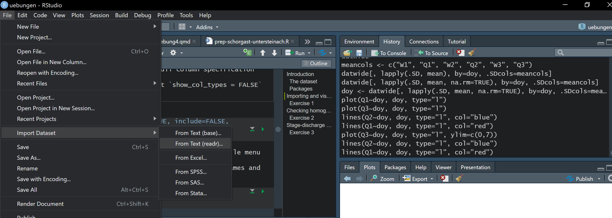
Als Nächstes inspizieren wir die Daten, um die Spaltennamen und Datentypen zu überprüfen. Anschließend werden die Daten visualisiert.
head(schorgast)# A tibble: 6 × 7
Datum W1 Q1 W2 Q2 W3 Q3
<date> <dbl> <dbl> <dbl> <dbl> <dbl> <dbl>
1 1968-01-01 136 1.9 NA 3.68 169 6.55
2 1968-01-02 135 1.71 NA 3.21 162 6.1
3 1968-01-03 134 1.62 NA 2.8 157 5.61
4 1968-01-04 133 1.52 NA 2.64 153 5.36
5 1968-01-05 132 1.43 NA 2.48 147 4.83
6 1968-01-06 140 2.19 NA 4.87 184 7.76class(schorgast$Datum)[1] "Date"plot(Q1 ~ Datum, data = schorgast, type = "l")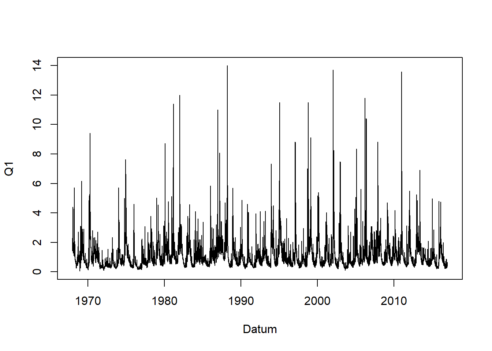
Falls die Spalte Datum nicht vom Typ (class) Date ist, werden Sie Schwierigkeiten haben, die Daten zu plotten.
Aufgabe 1
- Plotten Sie die Ganglinien für den Wasserstand (W) und den Abfluss (Q) für die Stationen 1 bis 3.
- Gibt es fehlende Daten?
- Welche Station hat den größten Abfluss? Warum?
Überprüfung der Homogenität der Daten
Viele statistische Tests und Analysen von hydrologischen Daten setzen voraus, dass die Daten homogen sind. Daten sind homogen, wenn sie konsistent und stationär sind und keine allmählichen oder plötzlichen Änderungen aufweisen, die oft visuell schwer zu erkennen sind. Solche Änderungen könnten durch eine Veränderung der Landnutzung im Einzugsgebiet oder durch eine Änderung der Messmethodik verursacht werden. Eine schnelle und einfache Möglichkeit, dies zu überprüfen, ist der Doppelsummentest, der zusätzliche hydrologische Zeitreihen aus einem nahegelegenen Einzugsgebiet erfordert. Dieser Test deckt jedoch keine Inhomogenitäten auf, die beide Einzugsgebiete gleichzeitig betreffen, wie zum Beispiel den Klimawandel.
Der Doppelsummentest beinhaltet das Aufsummieren der täglichen Abflussmessungen an zwei Stationen für denselben Zeitraum und das Plotten der Summen gegeneinander. Wenn der Plot eine gerade Linie ergibt, sehen die Daten homogen aus. Ein Knick in der Kurve deutet auf eine plötzliche Änderung in den Daten hin, eine Änderung der Steigung weist auf eine allmähliche oder systematische Veränderung hin. Die R-Funktion cumsum() berechnet die kumulative Summe der Messwerte (d. h. q1, q1+q2, q1+q2+q3, …).
x <- 1:10
x [1] 1 2 3 4 5 6 7 8 9 10cumsum(x) [1] 1 3 6 10 15 21 28 36 45 55Wir plotten die Doppelsumme für die Stationen 1 und 2 unter Verwendung der Spalten Q1 und Q2. Fügen Sie einige Achsenbeschriftungen mit xlab und ylab hinzu. Anschließend führen wir eine einfache lineare Regression mit der Funktion lm() durch, um eine Linie durch die Daten zu plotten. Die Linie wird mit der Funktion abline() dem Plot hinzugefügt, wobei die Farbe auf Rot geändert wird (col = "red") und die Linienbreite auf das Doppelte des Standards gesetzt wird (lwd = 2).
sum1 <- cumsum(schorgast$Q1)
sum2 <- cumsum(schorgast$Q2)
plot(sum2 ~ sum1, xlab="Station 1", ylab="Station 2")
reg1 <- lm(sum2 ~ sum1)
abline(reg1, col = "red", lwd = 2)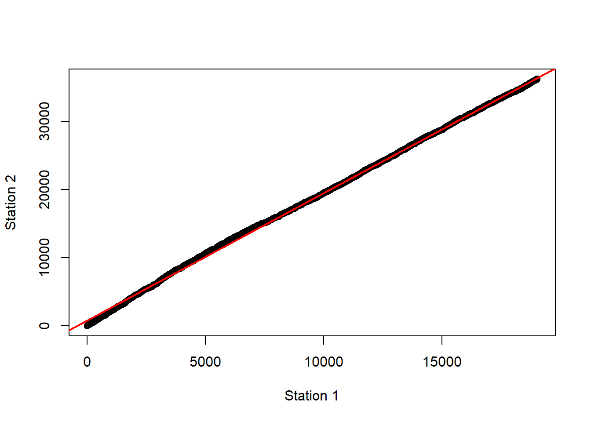
Die Linie sieht anfangs ziemlich gerade aus, da die schwarzen Punkte der roten Linie sehr eng folgen. Aber was passiert, wenn wir die Regression nur auf den ersten Teil der Reihe beschränken, sagen wir auf das erste Quartal, was etwa 4500 Beobachtungen entspricht?
plot(sum2 ~ sum1, xlab="Station 1", ylab="Station 2")
reg2 <- lm(sum2[1:4500] ~ sum1[1:4500])
abline(reg2, col = "red", lwd = 2)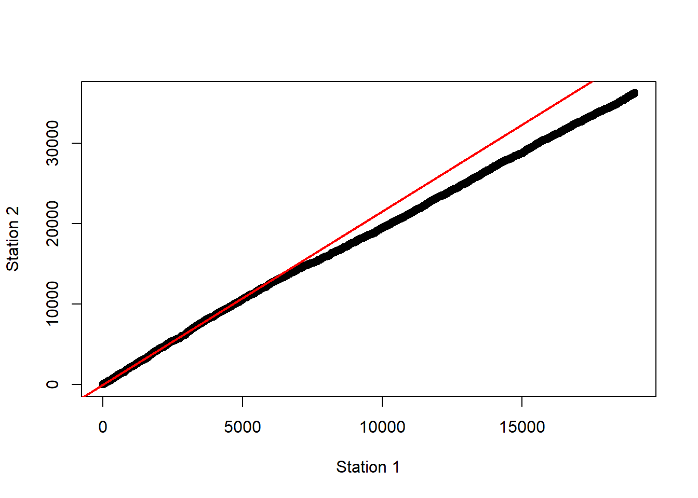
Die Linie ist vielleicht nicht so gerade, wie sie zunächst erschien.
Aufgabe 2
- Was bedeutet die Abweichung von der Linie im obigen Plot?
- Was könnte in den Einzugsgebieten der Stationen 1 und 2 passiert sein, um diese Abweichung zu erklären?
- Verwenden Sie Doppelsummenplots, um die anderen Stationen zu vergleichen, d. h. Station 1 und 3 sowie Station 2 und 3. Erklären Sie Ihre Ergebnisse.
Wasserstand-Abfluss-Beziehungen
Hydrologische Stationen messen den Abfluss nicht direkt, sondern den Wasserstand. Schluesselkurven (Wasserstand-Abfluss-Beziehungen) werden verwendet, um den Abfluss aus dem Wasserstand zu berechnen. Diese Beziehungen werden definiert, indem der Abfluss bei verschiedenen Wasserständen gemessen und anschließend eine Kurve an die Messwerte angepasst wird. Die Wasserstand-Abfluss-Beziehung hängt vom Querschnitt des Flussbettes ab. Wenn sich der Querschnitt verändert, gilt die Wasserstand-Abfluss-Beziehung nicht mehr und muss neu berechnet werden.
Aufgabe 3
- Plotten Sie die Wasserstand-Abfluss-Beziehungen für die drei Stationen. Typischerweise wird der Wasserstand auf der (vertikalen) y-Achse und der Abfluss auf der x-Achse dargestellt. Die Plots sollten ungefähr so aussehen:
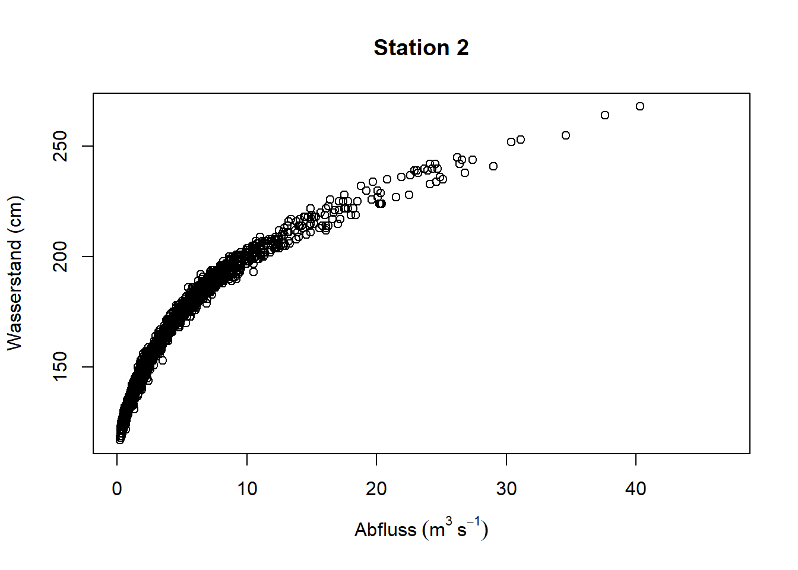
Beim Betrachten der Wasserstand-Abfluss-Kurven fällt auf, dass es ziemlich viel Rauschen geben kann. Eine feste Wasserstand-Abfluss-Kurve würde wie eine scharfe Linie aussehen, sodass möglicherweise im Laufe der Jahre unterschiedliche Wasserstand-Abfluss-Kurven verwendet wurden. Die Funktion ggplot() aus dem Paket ggplot2 bietet einige hilfreiche Funktionen, um dies zu untersuchen. Zum Beispiel ist es möglich, die Punkte nach Zeit farblich zu codieren, indem man das Argument colour = Datum setzt. Dies weist ggplot an, die Punkte entsprechend den Werten in der Spalte Datum einzufärben.
ggplot(data = schorgast) +
geom_point(aes(x = Q1, y = W1, colour = Datum)) +
theme_light()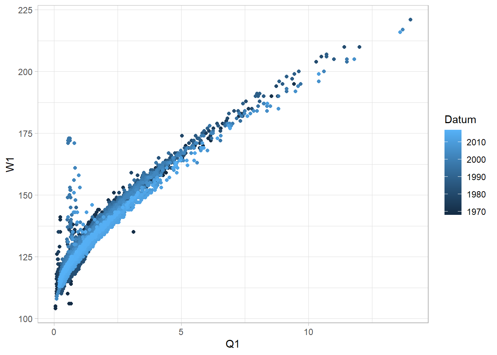
Erstellen Sie einen Plot wie den oben für Station 3. Was können Sie darüber sagen, wie sich die Form der Wasserstand-Abfluss-Kurve im Laufe der Zeit verändert haben könnte?
Wie hat sich der Querschnitt des Flussbetts im Laufe der Zeit verändert, um diesen Effekt zu verursachen?
Welche hydrologischen Prozesse könnten diese Veränderungen verursacht haben?
Dauerlinien
Dauerlinien zeigen (wenn sie aus täglichen Abflussdaten erstellt werden), wie oft ein bestimmter Wasserstand oder Abfluss innerhalb eines bestimmten Zeitraums überschritten wird. Zum Beispiel: An wie vielen Tagen pro Jahr wird eine Abflussrate von 1,5 \(\mathrm{m^3 s^{-1}}\) überschritten? Sie zeigen die Überschreitungswahrscheinlichkeit eines gemessenen Wertes.
Wir erstellen diese, indem wir die Werte, die uns interessieren, vom höchsten zum niedrigsten sortieren und diese Werte dann für den Zeitraum plotten, der uns interessiert.
Wir betrachten den Wasserstand an Station 3 (W3). Zuerst sortiert die Funktion order() die Daten vom niedrigsten zum höchsten Wert und gibt die entsprechenden Indizes zurück, die wir ind nennen. Danach kehrt die Funktion rev() diese Reihenfolge um, was wir revind nennen. Schließlich erstellen wir ein neues data.frame, das mit diesen Indizes sortiert ist.
ind <- order(schorgast$W3)
revind <- rev(ind)
W3_sortiert <- schorgast[revind, ]
# in R, it is also possible to combine these steps
W3_sortiert <- schorgast[rev(order(schorgast$W3)), ]
head(W3_sortiert)# A tibble: 6 × 7
Datum W1 Q1 W2 Q2 W3 Q3
<date> <dbl> <dbl> <dbl> <dbl> <dbl> <dbl>
1 2003-01-03 183 7.48 245 26.2 368 38.8
2 2006-05-28 196 10.4 242 24.5 354 52
3 2011-01-14 216 13.6 264 37.6 353 57.4
4 2002-01-28 217 13.7 268 40.3 350 68.9
5 1998-11-01 205 11.5 252 30.4 350 46.7
6 1998-09-16 167 5 242 24.1 350 38.2Jetzt können wir eine Dauerlinie plotten. Wir fügen eine Spalte für die Wahrscheinlichkeit hinzu, die wir wahrscheinlichkeit nennen, und berechnen diese aus der Anzahl der Beobachtungen (nzeilen). Normalerweise verwenden Sie das Dollarzeichen $, um auf Spalten in einem data.frame zuzugreifen (z. B. schorgast$Datum). Sie können jedoch auch $ verwenden, um Spalten zu erstellen. R überprüft, ob die Spalte existiert, und falls nicht, wird sie von R erstellt. Da die Spalte wahrscheinlichkeit noch nicht existiert, können wir sie mit schorgast$wahrscheinlichkeit <- ... erstellen.
nzeilen <- nrow(W3_sortiert)
W3_sortiert$wahrscheinlichkeit <- (1 : nzeilen) / nzeilen
plot(W3~wahrscheinlichkeit, data = W3_sortiert, type = "l")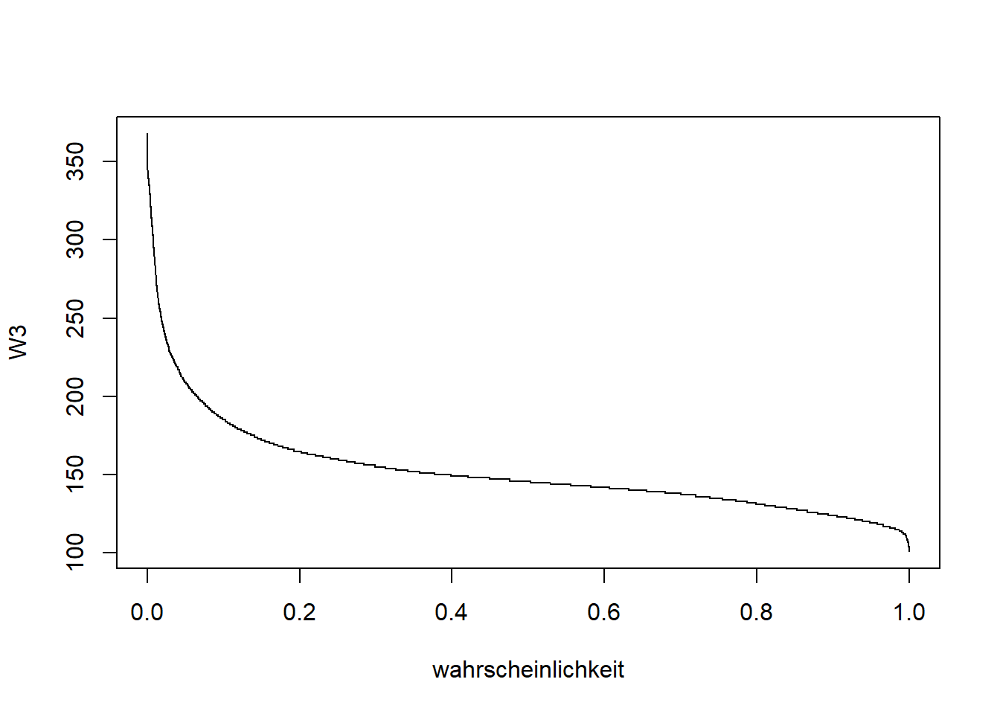
Nun können Sie die Wahrscheinlichkeit berechnen, dass ein bestimmter Wasserstand an einem Tag überschritten wird. Versuchen Sie, dies manuell zu tun, indem Sie die Wahrscheinlichkeit aus der Kurve abschätzen. Sie können die Funktion abline() verwenden, um Linien als Orientierungshilfe zum Plot hinzuzufügen. Zum Beispiel fügt abline(h = 200) eine horizontale Linie bei y=200 hinzu, und abline(v = c(0.2, 0.4, 0.6)) fügt vertikale Linien bei x = 0.2, x = 0.4 und x = 0.6 hinzu.
Aufgabe 4
Schätzen Sie mit der oben beschriebenen Methode die Überschreitungswahrscheinlichkeit eines Wasserstands von 148 cm an Station 3.
Welcher Wasserstand an Station 3 wird an 10% der Tage (d. h. mit einer Wahrscheinlichkeit von 0,1) überschritten?
Summenkurven
Die Summenkurve stellt die integrierte Ganglinie (Volumen) der Abflüsse dar. Sie beginnt gewöhnlich bei Null und endet bei einem Wert, der als Abfluss- oder Wasservolumen der betrachteten Periode T bezeichnet wird. Summenkurven sind wichtig für das Management von Wasserspeichern und Stauseen. Die Steigung der Kurve entspricht dem Abfluss.
\[ V_t = \int_0^t Q\, dt \]
oder
\[ V_T = \int_0^T Q\, dt \]
Hier berechnen wir die Summenverteilung für bestimmte Jahre. Um dies zu erleichtern, fügen wir zunächst zwei neue Spalten zu unserem Datensatz hinzu, die das Jahr der Messung und den Tag des Jahres anzeigen. Die Funktionen year() und yday() aus dem Paket lubridate übernehmen dies.
schorgast$jahr <- year(schorgast$Datum)
schorgast$jahrtag <- yday(schorgast$Datum)
head(schorgast)# A tibble: 6 × 9
Datum W1 Q1 W2 Q2 W3 Q3 jahr jahrtag
<date> <dbl> <dbl> <dbl> <dbl> <dbl> <dbl> <dbl> <dbl>
1 1968-01-01 136 1.9 NA 3.68 169 6.55 1968 1
2 1968-01-02 135 1.71 NA 3.21 162 6.1 1968 2
3 1968-01-03 134 1.62 NA 2.8 157 5.61 1968 3
4 1968-01-04 133 1.52 NA 2.64 153 5.36 1968 4
5 1968-01-05 132 1.43 NA 2.48 147 4.83 1968 5
6 1968-01-06 140 2.19 NA 4.87 184 7.76 1968 6Da wir tägliche Daten haben, ist \(dt = 1\) Tag. Das bedeutet, dass wir \(V_T\) einfach durch das Aufsummieren der Messwerte mit cumsum() berechnen können.
schorgast <- schorgast |>
group_by(jahr) |>
mutate(summeQ1 = cumsum(Q1))
head(schorgast)# A tibble: 6 × 10
# Groups: jahr [1]
Datum W1 Q1 W2 Q2 W3 Q3 jahr jahrtag summeQ1
<date> <dbl> <dbl> <dbl> <dbl> <dbl> <dbl> <dbl> <dbl> <dbl>
1 1968-01-01 136 1.9 NA 3.68 169 6.55 1968 1 1.9
2 1968-01-02 135 1.71 NA 3.21 162 6.1 1968 2 3.61
3 1968-01-03 134 1.62 NA 2.8 157 5.61 1968 3 5.23
4 1968-01-04 133 1.52 NA 2.64 153 5.36 1968 4 6.75
5 1968-01-05 132 1.43 NA 2.48 147 4.83 1968 5 8.18
6 1968-01-06 140 2.19 NA 4.87 184 7.76 1968 6 10.4 Hier haben wir das Paket dplyr verwendet. Das Paket dplyr nutzt das sogenannte “Pipe”-Symbol |>, um das Ergebnis einer Funktion direkt an die nächste Funktion zu übergeben. Denken Sie an das Pipe-Symbol |> als das Wort “dann”. Sie können die Funktion folgendermaßen interpretieren: Nehmen Sie den Datensatz schorgast, dann verwenden Sie group_by(), um Gruppen zu erstellen, die im gleichen jahr liegen, dann verwenden Sie mutate(), um eine neue Spalte namens summeQ1 zu erstellen, die die kumulative Summe (cumsum()) der Spalte Q1 innerhalb jeder Gruppe (jahr) darstellt.
Nun können wir die Summenkurve für ein beliebiges Jahr plotten, hier für 2009:
plot(summeQ1 ~ Datum, data = schorgast, subset = jahr==2009, type = "l")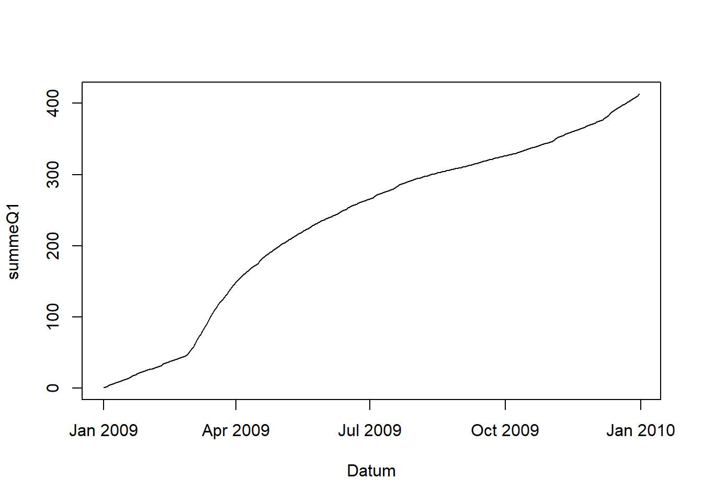
Aufgabe 5
- Plotten Sie die Summenkurve für Station 2 (Q2) für das Jahr 2006. Zuerst müssen Sie die kumulative Summe berechnen, wie oben für Station 1 (Q1) gezeigt.
Die Funktion ggplot() bietet einige nützliche Funktionen, um mehrere Linien zu visualisieren. Hier möchten wir mehrere Jahre zusammen betrachten, um einen Vergleich anzustellen. Zuerst konvertieren wir die Spalte jahr in einen Faktor, um die Darstellung im Plot zu verbessern. Anschließend erstellen wir eine Teilmenge der Daten für die Jahre 1990–2001, damit die Plots übersichtlicher bleiben. Danach plotten wir die Teilmenge der Daten und setzen colour = jahr, sodass ggplot jede Linie eines Jahres separat darstellt. Mit theme_minimal() wird der graue Standardhintergrund entfernt und einige andere Details vereinfacht.
# change 'jahr' to a factor
schorgast$jahr <- as.factor(schorgast$jahr)
# create a subset of the data for years 1990 - 2001
schorgast_sub <- subset(schorgast, jahr %in% 1990:2001)
# plot the data, each year in a different colour
ggplot(data = schorgast_sub) +
geom_line(aes(x = jahrtag, y = summeQ1, colour = jahr)) +
theme_minimal()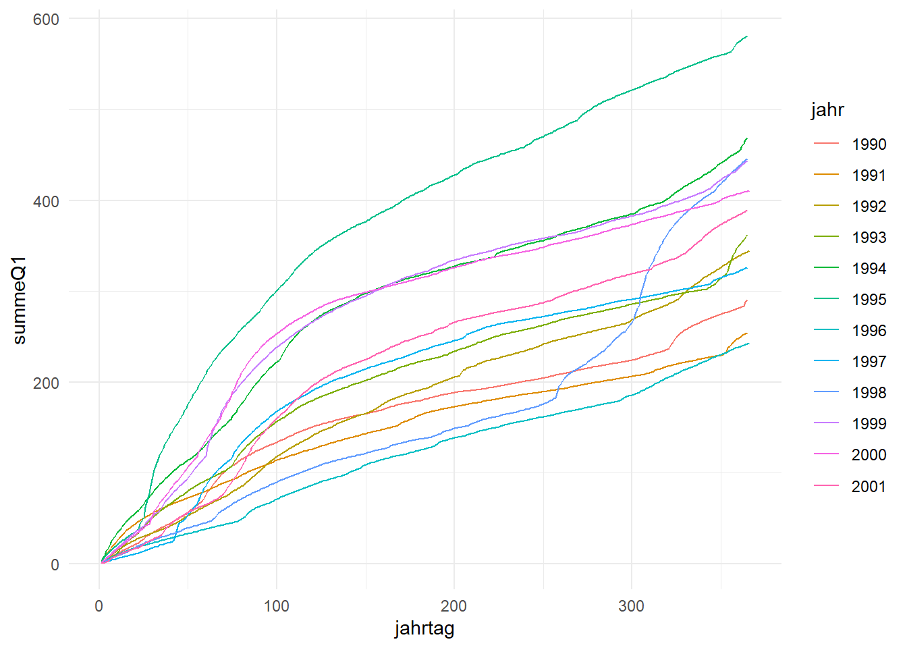
Eine weitere Möglichkeit, ansprechende Plots zu erstellen, besteht darin, für jedes Jahr ein separates Panel zu erstellen. Dies erreichen wir mit der Funktion facet_wrap(). Wir weisen facet_wrap() an, für jedes Jahr ein neues Panel zu erstellen (~ jahr) und die Skalen in jedem Panel konstant zu halten (scales = "fixed").
# plot the data again, this time each year in a panel
ggplot(data = schorgast_sub) +
geom_line(aes(x = jahrtag, y = summeQ1)) +
facet_wrap(~jahr, scales = "fixed") +
theme_minimal()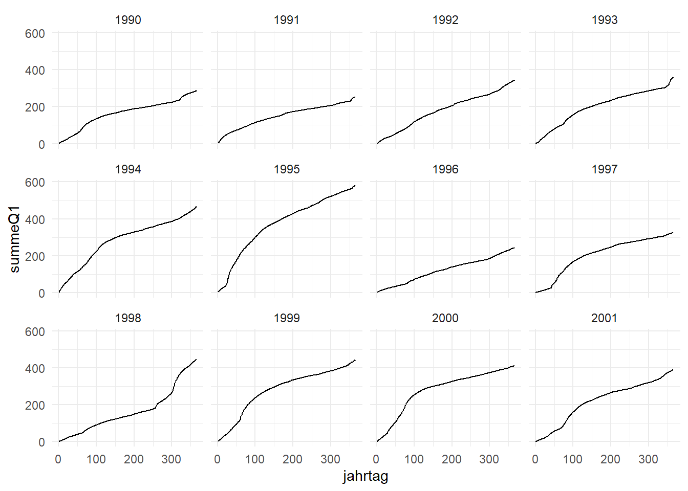
Aufgabe 6
Betrachten Sie die obigen Plots:
- Welches war das nasseste Jahr?
- Welches war das trockenste Jahr?
- Welches Jahr hatte den nassesten Herbst? Denken Sie daran, dass steile Teile der Kurve den höchsten Abfluss anzeigen.
Abschätzung des Abflusses an nicht gemessenen Standorten
Verwendung der Einzugsgebietsflächen
Hydrologische Pegelstationen befinden sich selten genau an dem Ort, den Sie für Ihr Bauprojekt benötigen. In solchen Fällen ist es notwendig, den Abfluss von einem anderen Standort abzuschätzen oder anzupassen. Zum Beispiel müssen Sie möglicherweise den Abfluss an Punkt B abschätzen, indem Sie die Daten von Station 2 verwenden, die die nächste Station ist.
| Pegelstation | EZG.km2 | Gewaesser | Ort |
|---|---|---|---|
| Station 1 | 77.2 | Schorgast | Wirsberg |
| Station 2 | 137.4 | Untere Steinach | Untersteinach |
| Station 3 | 244.4 | Schorgast | Untersteinach |
| Punkt A | 91.7 | Schorgast | Zwischen 1 und 3 |
| Punkt B | 112.1 | Untere Steinach | Oberhalb von Station 2 |
Um dies zu tun, können Sie den gemessenen Abfluss proportional zur Größe der Einzugsgebietsflächen (\(A_E\)) an jedem Standort skalieren.
\[ Q_B = Q_2 \frac{A_B}{A_2} \]
wobei \(Q_B\) und \(Q_2\) der Abfluss an Punkt B bzw. Station 2 sind, und \(A_B\) und \(A_2\) die Einzugsgebietsflächen an Punkt B bzw. Station 2 darstellen.
Verwenden Sie die Daten in der obigen Tabelle:
schorgast$QB <- schorgast$Q2 * 112.1 / 137.4
# plot the result
plot(QB ~ Datum, schorgast, subset = jahr == 1989,
type = "l", col = "red", main = "QB - 1989")
Aufgabe 7
Verwenden Sie die in der Tabelle angegebenen Einzugsgebietsflächen, um den Abfluss an Punkt A basierend auf den gemessenen Abflüssen an Station 1 abzuschätzen. Fügen Sie diese Daten dem
data.frameschorgastals neue Spalte mit dem NamenQAhinzu.Sie könnten auch eine der anderen Stationen verwenden. Welche halten Sie für am besten geeignet?
Verwendung eines Regressionsansatzes
Vielleicht haben Sie bereits einige Abflussdaten an dem Standort, der Sie interessiert. In diesem Fall können Sie die Korrelation zwischen dem Abfluss an Ihrem Interessensstandort und den gemessenen Abflüssen an einem anderen Standort mit einer Pegelstation nutzen.
In diesem Beispiel schätzen wir den Abfluss an Station 3 (Q3) basierend auf den Abflüssen an Stationen 1 (Q1) und 2 (Q2). Tatsächlich haben wir an Station 3 gemessene Daten, sodass wir dies in der Praxis nicht tun müssten, aber wir machen es dennoch, um zu testen, wie gut unsere Methode ist. Es macht Sinn, sowohl Station 1 als auch Station 2 zu verwenden, da der Abfluss an Station 3 nahe an der Summe beider Abflüsse liegen sollte, was uns eine bessere Schätzung liefert.
In R ist es einfach, eine einfache lineare Regression mit der Funktion lm(y ~ x, data = meinedaten) durchzuführen. Hier ist y die abhängige Variable, also die, die wir schätzen möchten, und x die unabhängige Variable, also die, die uns bei der Vorhersage hilft. y und x sind die Namen der Spalten in meinedaten.
Eine multiple Regression mit mehr als einer unabhängigen Variable, zum Beispiel x1 und x2, ist in R ebenfalls sehr einfach. Sie sieht so aus: lm(y ~ x1 + x2, data = meinedaten).
Wir können daher Q3 (abhängige Variable) aus Q1 und Q2 (unabhängige Variablen) folgendermaßen schätzen:
reg <- lm(Q3 ~ Q1 + Q2, data = schorgast)Die Ergebnisse können wir mit der Funktion summary() betrachten.
summary(reg)
Call:
lm(formula = Q3 ~ Q1 + Q2, data = schorgast)
Residuals:
Min 1Q Median 3Q Max
-18.3370 -0.1842 0.0263 0.1889 21.8209
Coefficients:
Estimate Std. Error t value Pr(>|t|)
(Intercept) -0.164524 0.008880 -18.53 <2e-16 ***
Q1 1.362386 0.013070 104.23 <2e-16 ***
Q2 1.045992 0.004819 217.07 <2e-16 ***
---
Signif. codes: 0 '***' 0.001 '**' 0.01 '*' 0.05 '.' 0.1 ' ' 1
Residual standard error: 0.7561 on 17895 degrees of freedom
Multiple R-squared: 0.9635, Adjusted R-squared: 0.9635
F-statistic: 2.365e+05 on 2 and 17895 DF, p-value: < 2.2e-16Die Zusammenfassungstabelle liefert wichtige Informationen über die Regression. Die Regressionskoeffizienten befinden sich in der Spalte “Estimate”. Der T-Statistik-Wert ist in der Spalte “t value” angegeben. Er zeigt, dass alle Koeffizienten hochsignifikant sind, mit sehr niedrigen p-Werten, die in der Spalte “Pr(>|t|)” angegeben sind. Der “R-squared”-Wert zeigt, dass unsere Regression mehr als 96% der Varianz erklärt, was sehr gut ist.
Plotten wir die Daten für ein Jahr (zum Beispiel 1980), um zu sehen, wie gut unsere Schätzung von Q3 ist. Wir verwenden die Funktion predict(), um die Ausgabe der Regression zu berechnen, und fügen sie als Spalte zum Datensatz schorgast hinzu. Wenn wir predict() verwenden, geben wir newdata = schorgast an, was der Funktion mitteilt, dass sie in schorgast nach Spalten mit den Namen der unabhängigen Variablen (Q1 und Q2) suchen soll, und dann diese Variablen verwendet, um Q3 mit der Regression vorherzusagen.
# add predicted values to schorgast
schorgast$Q3_predicted <- predict(reg, newdata = schorgast)
# plot the original data in black
plot(Q3 ~ Datum, schorgast, subset = jahr == 1980, type = "l")
# add the predicted values
lines(Q3_predicted ~ Datum, schorgast, col = "red")
# add a legend
legend("topright", c("measured", "predicted"), lty=1, col = c("black", "red"))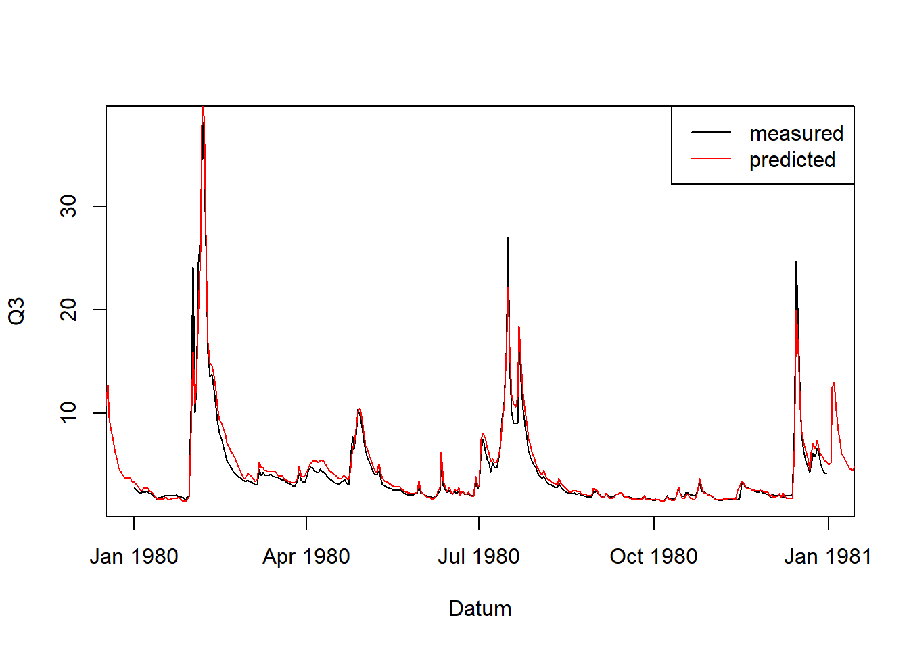
Gar nicht so schlecht.
Aufgabe 8 (Hacker-Aufgabe - optional)
führen Sie den Befehl
plot(reg)aus. Sie müssen immer eine Taste drücken, um den nächsten Plot anzuzeigen. Was zeigen diese Plots? Wir können sie in der Gruppe diskutieren.Schätzen Sie den Abfluss an Station 2 (abhängige Variabel ist Q2) anhand der Abflussdaten an Station 1 (unabhängige Variabel ist Q1). Vergleichen Sie die geschätzten und gemessenen Daten in einem Plot. Ist die Schätzung genauso gut wie für Station 1?